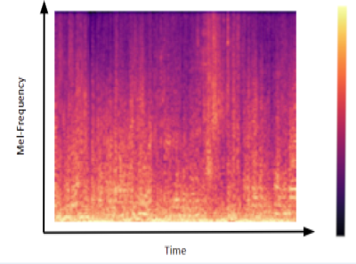
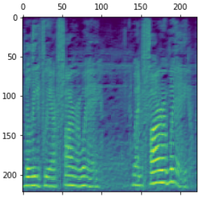

Speech Classification Research
Developing a Speech Interface for use in Assistive Service Robots
This research was conducted as part of my engineering masters program and the continuation of research begun during an internship.
Problem Area
The worlds ageing population is increasing at a dramatic rate.
With the expected increase in the number of people over the age of 65, comes a need for more facilities to assist them in living independent lives. The current model of the care industry is not equipped to handle the impending surge in demand, so the sector is crying out for innovation. Assistive service robots may be part of the solution to this problem. There needs to be a way of controlling these devices and given the target users, voice control would appear the best option for a control interface.
Research Focus
The focus of this research was to develop a direct speech classifier.
This is module that distinguishes between speech directed at the robot and other environmental noises. Such a classifier would be a more privacy-focused replacement for wake-word activation.
Research Process

Speech Processing

The first thing that needed to be decided on was a metric to judge the sound samples on. Through
an extensive literature multiple speech properties were examined and compared until finally I
settled on using Mel Frequency Spectrograms.
It seemed like the perfect choice as the mel scale
aplfies frequencies associated with human voice and the image based nature of the spectrogram
made for easy integration into the CNN.
Audio clips would be fed into a script to split the audio files in 4 second chunks.This
strayed from the norm as sounds are usually analyzed in much shorter windows ( < 250ms).
However I
wasn't interested in the content of the speech (i.e exactly what someone was saying), just
in the presence of speech in a sample so I did not need the same level of fidelity. Then
each clip was converted from a wav file to a Mel Spectrogram using the Librosa library for
Python.
Creating the Dataset
One major issue I
found
with previous research into speech classification with the size and quality of the
datasets
used. A lot of speech recognition models are trained on relatively small, clean datasets
in
laboratory condition. While this can be great for proof of concept, my research was more
focused
on on creating something to be used in a real-world setting therefore creating my own
database
was an essential part of the process.
I used subsets of Google's AudioSet and the
UrbanSound8K dataset along
with field recordings in
order to try and create a robust recognition model. Podcasts , Audiobooks and actual recordings
of one sided conversations were used for the samples of direct speech. Ambient sounds such as
kitchen noises, field recording of libraries ,cafes and hallways and other environmental sounds
clips were used as the non speech classes. I also mixed speech and non speech samples together
to varying degrees in order to discourage the model from overfitting to the training data.
The dataset consisited of 20 hours of audio files, 10 hours of speech (50/50
male/female voices) and 10 hours of environmental noise (30% included some level of
background coversation).
Model Devlopment
First step in model
development was choosing a suitable benchmark. Since using CNN’s for speech classification was a
relatively novel approach at the time there weren't many existing models that I could use freely
for my research. Therefore I chose to split the benchmarking process into two sections; the
application and the technology.
The WebRTC VAD (voice activity detection) algorithm was chosen as the benchmark mark for my
models performance at completing its classification task. The WebRTC model is considered one of
the gold standards in Voice Activity Detection so it was an obvious choice to compare
against.However it runs off completely different input parameters and uses a statistically model
rather than and a neural network therefore I would have have to chose another model for
comparison to see how well it was implemented. I chose both the ResNet 50 and VGG 19 for this
purpose as they are well established open sourced image classification models . Using transfer
learning I was able to adjust the model weights to fit my purpose using my new dataset.
The custom convolutional neural network that was developed as part of this research combined the
strived to both be light weight, like the WebRTC, so it could be used on smaller embedded
systems but still mretain some of the powerful pattern recogniton adapibilty of the CNNs.
Testing and Analysis
For the testing the
dataset was given a 70/20/10 split. 70% being used model training, 20% for validation and the
remaining 10% remaining unseen by the model to ensure fair testing. Each model also was put
through 3 classification tasks Binary(Speech/NonSpeech) 3 Class with added the background speech
class and 6 Class in which the background noise was broken up into several subsections. The
models computation time was also recorded.
The models precision and recall were used as points of comparison. Precision being how many
many times it correctly identified a sample and recall describing how well it could recognise a
particular class. Both were then combined to get a full picture of each models accuracy.
The neural networks were further dissected with layer activation information being
extracted. This could allowed me to take a peek under the hood of these neural networks and get
an idea of what patterns and feature were causing each layer to activate ,thus how the model was
making its classification decisions.
Results
The results from the testing were very promising for the custom CNN. While it was out performed
by both the WebRTC and RESNET50/ VGG16 models in terms of precision, the custom model had far
fewer false positives meaning in terms of overall accuracy it came out on top. The WebRTC models
were designed solely for recognising speech so it was to be expected that it would get confused
on non speech samples while the RESNET50/ VGG16 models were simple to heavy for the task and had
over fit to the training data. Although in terms of accuracy the model was a success there was
room for improvement in terms of computational efficiency. Excluding the data per processing
(turning sound file into spectrogram) the custom CNN model was comparable to the WebRTC speeds
making it a contender to be used with embedded systems. However the process of changing the
sound into an image was time consuming, and this problem will need to be addressed before the
model can be used for a real-world application.
This exploratory research has provided a good outline for the appropriate methods to use when
conducting further
work in the area of study. It has also provided a baseline for model performance for this
classification task and
provided a new database that can be used or built upon on further research into the field.